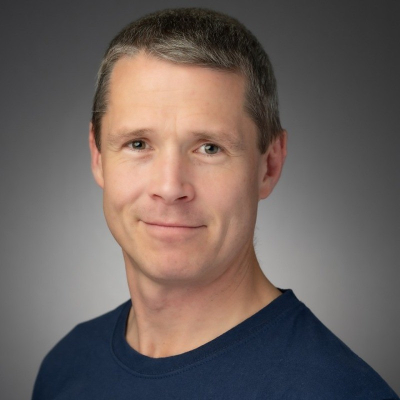

The Inner Game
Get curious about what makes you tick. Explore attention, intuition, awareness and motivation through small experiments in everyday life.
Happy Techie / Curiosity in action
Explore new tech. Discover what makes you tick. Get out and do something interesting.
For curious people who reckon there’s more to life than the daily grind.
Stay curious. Find your signal. Enjoy the adventure.
The Happy Techie Lab
Curious people, meaningful ideas, practical experiments and a little help making life more fun and fulfilling.
Explore AI, try something new, challenge old habits, share experiences and have a laugh along the way.
The Lab is taking shape. These are the directions we’re exploring — bring your ideas and help shape what happens next.
Get curious about what makes you tick. Explore attention, intuition, awareness and motivation through small experiments in everyday life.
Get hands-on with AI agents and useful tools. Build, tinker and test what actually makes life or work better.
Learn something new, shake up a habit or head outdoors. Small challenges and real-world adventures that take you off autopilot.
Bring a question, share what you’ve tried and hear what others are discovering. Good conversation, a little accountability and plenty of laughs.
No big promises. No endless self-optimisation. Just good people figuring things out together.
Side quests / Try one for yourself
You don’t need a grand plan. Here are five things you could try — pick whatever sparks your curiosity.
Try a two-minute meditation and notice where your attention goes.
Experiment with an AI agent on a small, useful task.
Have a phone-free evening. See what you feel like doing instead.
Get outside for an adventure: a new trail, coastal walk or somewhere you’ve never explored.
Reconnect with a friend you haven’t spoken to in a while.

The person behind the project
I’m Mike Hughes. I’ve spent nearly 20 years leading tech teams, alongside a long-running interest in meditation, self-development and what makes us tick.
These days I’m getting hands-on with AI, experimenting with useful tools and making time for outdoor life on Ireland’s west coast.
Happy Techie brings those interests together: curious people, practical experiments and a bit more adventure in everyday life.
Bring your curiosity
Bring an idea, a question or a side quest. The Lab is taking shape — help decide what comes next.